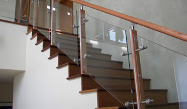

Semakin berkembangnya dunia pembangunan, karenanya hadir banyak material penambah yang melengkapi keindahan sebuah banguanan. Fungsi utama kaca yakni sebagai pencahayaan natural dan juga sebagai komponen dari estetika bangunan.
Kini telah hadir berjenis-jenis maca macam kaca yang bisa ditemui, setiap kaca mempunyai fungsinya masing-masing. Dapat untuk system keamanan, keindahan dan masih banyak yang bisa di peroleh dari pemasangan kaca. Jenis kaca-kaca tersebut diantaranya adalah kaca tempered Padang, kanopi kaca, kaca frameless, kaca cermin, railing kaca dan masih banyak ragam kaca lainnya yang dapat anda dapatakan dan anda aplikasikan pada bangunan.
Jasa Pemasangan Kaca Tempered Padang

Tak anda mebutuhkan jasa maintenance kaca, anda dapat mengunjungi dis.or.id. Disana anda bisa memanfaatkan jasa maintenance kaca dengan daya spesialis yang kapabel membersihkan gedung kaca dengan produk pembersih kaca apa yang terbaik untuk menghilangkan kotoran dan kusam. Dengan progres pendinginan yang kencang membuat kaca mempunyai kelenturan dan kekuatan yang baik terhadap tekanan di kedua sisi permukaan kaca. Maka dari itu, mereka sudah mulai menyukai tipe kaca yang satu ini. Banyak komponen properti yang bisa dihasilkan dengan bahan berupa kaca tempered Padang. Kini, kian banyak properti yang menerapkan kaca tempered Padang. Melainkan dahulu hanya gedung perkantoran atau sentra perbelanjaan modern saja yang menerapkan jenis kaca ini, kini rumah hunian juga telah dibangun dengan kaca tempered Padang. Kecuali ini tak lain karena semakin banyak orang yang memahami kwalitas serta keunggulan dari kaca tempered Padang ini.
Salah satu variasi kaca yang cocok untuk dipakai pada segala tipe bangunan ataupun perindustrian merupakan kaca tempered Padang, adalah yang paling aman karena memiliki elastisitas lebih baik dibandingkan dengan kaca lazimnya. Tidak anda berminat untuk memasang kaca temeperd, anda hanya tinggal mengunjungi laman dis.or.id. Bukan sembarang alat yang dipakai untuk memotong kaca tempered Padang cocok dengan keperluan. Tidak ketika ini anda sedang berkeinginan membangun suatu bangunan atau gedung, anda bisa memanfaatkan kaca tempered Padang untuk diterapkan langsung ke seluruh tipe bidang. Sekiranya aman kaca tempered Padang juga sanggup memberikan kesan estetika yang sungguh-sungguh bagus diperbandingkan dengan kata jenis lainnya. Anda bisa seketika mengunjungi dis.or.id untuk mendapatkan informasi mengenai jasa pemasangan kaca tempered Padang, menerapkan kaca tempered Padang dan pastinya hasil yang diberi bahkan akan pantas dengan apa yang Anda inginkan.
Info Pemesanan Selengkapnya
Google Maps: https://www.google.com/maps/d/u/0/viewer?mid=1wHa3dBFC0jOCBS2FtlNAYKtIEp5M6KyQ&ll=-7.27380280025364%2C112.65243155000007&z=18
Note: https://www.facebook.com/notes/distributor-of-industrial-supply/kontraktor-jasa-pemasangan-kaca-tempered/1785713878395158/
Event: https://www.facebook.com/events/260234754508702/
Portfolio Produk: https://www.facebook.com/1681607345472479/photos/?tab=album&album_id=1712631995703347
Distributor & Supplier Kaca Shower
Dengan menerapkan kaca shower pastinya kamar mandi yang dimiliki akan lebih tampak mewah dan menjadi sekat antara area berair dan zona kering. Shower screen yakni kotak atau alat yang berfungsi sebagai penyekat ruang khusus untuk kamar mandi. Di samping pintu kaca shower akan membuat kamar mandi kecil nampak lebih besar. Apalagi kini sudah ada toko penjual shower screen yang menjual produknya dalam cara satu paket termasuk pemasangannnya.
Tidak anda sedang mencari kaca shower untuk kamar mandi, anda dapat langsung mengunjungi dis.or.id. Disana anda dapat menerima kaca shower yang pastinya pantas untuk kamar mandi anda. Tak terbaik dan harga relatif murah. Anda dapat buktikan sendiri.
Distributor, Supplier & Jasa Pasang Kanopi Kaca

Pintu Kaca Shower pada kamar mandi yaitu salah satu pilihan yang bagus untuk desain interior kamar mandi modern. Anda dapat memilih kanopi kaca yang sesuai dengan keperluan dan keinginan anda. Sifat utama material bahan atap akrilik juga bisa disebut atap acrylic, ini ialah warnanya yang jernih tembus pandang. Jadi telah tidak heran lagi segala orang berkeinginan mencari harga yang sangat kompetitif untuk menyesuaikan budget atau anggaran mereka masing – masing untuk membikin produk canopy kaca. Disinilah letak perbedaan optis yang utama antara akrilik (acrylic) dengan kaca. {Jikalau tembus pandang, kaca menyerap cahaya yang masuk sehingga semakin tebal kaca karenanya semakin sedikit cahaya yang bisa melaluinya, maka sifat transparannya makin berkurang.|Di samping pintu kaca shower akan membikin kamar mandi kecil menonjol lebih besar. Atap akrilik atau bisa juga disebut atap kaca acrylic ini banyak ditemukan di sebuah bangunan rumah, seperti ruko, apartemen, kafe, mall, hingga bangunan gedung.
Tak anda saat ini sedang membutuhkan kanopi kaca, anda bisa lantas mengunjungi dis.or.id. Harga untuk tiap pemasangan malah beragam pantas dengan keperluan anda. Anda juga bisa memenfaatkan jasa pemasangan atap kanopi kaca dengan segala macam kaca yang anda butuhkan yang pantas dengan kriteria atap kanopi. Apabila fungsi utama kanopi sebagai pelindung untuk bangunan hal yang demikian, pemasangan kanopi kaca juga bisa membikin bangunan menjadi nampak lebih menawan dan menarik, apalagi menerapkan konsep yang sama dengan konsep rumah minimalis. Sesudah kaca untuk atap kanopi cukup digemari. Disana anda akan mendapat kanopi kaca yang cocok dengan berbagai ketebalan dan harga yang cukup relatif murah.
Jasa Maintenance Kaca
Jasa maintenance kaca menjadi solusi bagi Anda yang memiliki gedung yang terbuat dari kaca. Salah satunya pelayanan berupa pembersihan gedung yang terbuat dari kaca. Berbagai, kaca akan terlihat kusam karena telah lama tidak dibersihkan. Dis.or.id mempunyai energi pakar yang bisa kapabel membersihkan gedung pencakar langit yang bangunannya terbuat dari kaca.
Kini juga hadir maintenance kaca untuk membersihkan kaca berbentuk melengkung. Jika juga dengan warna dan format kaca.
Tidak anda mebutuhkan jasa maintenance kaca, anda dapat mengunjungi dis.or.id. Disana anda dapat memanfaatkan jasa maintenance kaca dengan kekuatan pakar yang mampu membersihkan gedung kaca dengan produk pembersih kaca apa yang terbaik untuk menghilangkan kotoran dan kusam. Dis.or.id memiliki seluruh energi ahli yang di rekrut hanya mereka yang profesional yang tahu persis bagaimana cara mengaplikasikan alat dan bagaimana membersihkan kaca gedung bertingkat. Oleh karena itu, dis.or.id cuma memilih orang-orang yang betul-betul profesional dan telah mempunyai pengalaman dalam hal maintenance kaca.
Distributor & Supplier Pintu Kaca

Pintu kaca yakni hal yang cukup penting dimiliki oleh sebuah bangunan. Banyak orang yang lebih menyukai dengan figur pintu kaca minimalis, merupakan pintu kaca frameless. Kelengkapan model pintu kaca bisa anda temukan, tak hanya teladan pintu kaca konvensional, ialah pintu kaca lipat, melainkan juga pintu kaca geser. Desain tersebut bisa disesuaikan dengan konsep properti Anda. Kini paling banyak diminati ketika ini yakni kaca tempered Padang sebab jauh lebih kuat dan tahan lama.
Anda dapat memiliki pintu kaca favorit anda kini juga dengan mengunjungi dis.or.id. Dengan tenaga spesialis yang sudah benar-benar handal dalam membikin pelbagai teladan pintu kaca.
Kaca yang di gunakan ialah kaca dengan mutu terbaik.
Jual Kaca Cermin

Kaca cermin dapat diwujudkan aksesoris untuk mempercantik interior rumah Anda. Namun, Anda harus memilih desain cermin yang unik, elegan, dan layak dengan tema desain interior rumah Anda. Sekarang, cermin tak hanya berbentuk persegi saja. Untuk bangunan bertingakat, terpenting diterapkan pada macam dinding kaca. Cermin dengan beraneka ukuran juga tersedia. Jadi, Anda memiliki banyak pilihan untuk mempertimbangkan cermin yang Anda pilih benar-benar dapat mempercantik interior rumah Anda. Tak saja, memang kesan minimalis menonjol dari cermin dengan bentuk persegi atau persegi panjang. Sekarang perlu dipandang juga yaitu apakah Anda berkeinginan memiliki kaca cermin desain minimalis atau yang elegan. Artinya, Anda tak bisa melihat yang ada di dalam ruangan. Anda seolah sedang berkaca.
Dis.or.id merupakan penyedia berbagai ukuran kaca cermin yang bisa anda aplikasikan ke gedung, kantor maupun rumah anda. Tidak cuma itu, harga yang di tawarkan sangatlah terjangkau dengan kwalitas dan juga kualitas terbaik. Atau barangkali Anda mengharapkan kaca cermin yang lantas dapat direkatkan pada bagian furniture tertentu seperti pintu lemari. Anda bisa menambahkan pigura atau tanpa frame cocok dengan kesukaan Anda. Atau Anda bisa buat pintu kaca cermin. Atau kaca cermin ini juga dapat diciptakan sebagai bahan pintu lemari. Harga yang terjangkau dan kwalitas terbaik merupakan ciri khas dari dis.or.id. Tetapi kunjungi dis.or.id untuk menerima penawaran menarik.
Jasa Pemasangan Railing Kaca

Railing kaca menjadi salah satu bagian yang akan membuat kelihatan benar-benar minimalis. Anda dapat memilih desain sesuka hati Anda. Anda bisa mengerjakan eksplorasi dengan menerapkan bahan berupa kaca ketika berkeinginan mempunyai rumah dengan desain minimalis. Karenanya dari itu, para produsen berusaha untuk menghasilkan railing yang terbuat dari kaca dengan figur yang berbeda-beda. Tidak kaca ini pecah, pecahannya halus sehingga tak akan melukai orang. Pun juga bahan yang dipakai.
Dalam hal ini, ada banyak macam kaca yang bisa digunakan untuk membikin railing ini. Tidak ini tidak cuma diatur oleh ketebalan atau harga tapi juga oleh jenis. Ini adalah tipe kaca yang amat baik dan kuat. Kaca ini amat kuat dan juga aman. Dengan demikian, pecahan tidak akan melukai siapa saja. Pecahannya sangat kecil dan lembut sehingga tidak akan melukai siapa saja yang terkena pecahan. Kini pasti, railing kaca ini menjadi alternatif yang ideal. Sekiranya memberikan kesan minimalis pada interior rumah, ini juga membuat rumah Anda kelihatan lebih nyaman untuk dibuat daerah tinggal.
Bagi anda yang sedang mencari railing kaca dengan kualitas terbaik, anda dapat lantas kunjungi dis.or.id. Harga yang betul-betul ekonomis serta mutu terbaik yang sudah terjamin membuat anda tak akan menyesal membeli railing kaca di dis.or.id. Tentu dengan harga yang murah tapi konsisten berkelas.
Jasa Pemasangan Kubikel Toilet

Saat ini banyak desain WC yang didominasi oleh kubikel/cubicle yang memiliki tampilan lebih modern dan mewah. Kubikel kamar kecil bisa di gunakan di toilet mall.
Bila anda berminta untuk membeli kubikel kaca, anda bisa mengunjungi dis.or.id. Disana terdapat kubikel kaca dengan beraneka ukuran dan ketebalan dengan harga yang cukup terjagkau di bandingkan dengan tempat lainnya. Kaca sebagai penyekat dalam kamar mandi biasa disebut kaca shower. Kaca shower banyak digunakna karena memberikan kesan mewah.
Harga yang ditawarkan pun cukup relatif murah.
Kaca shower yang di jual di jamin kaca shower yang mempunyai kwalits terbaik dan bermutu tinggi.
Distributor & Supplier Pintu Lipat Kaca

Pastinya anda sudah mengenal banyak kelebihan dari kaca tempered.Lalu, berapakah harganya? Anda mungkin menyangka bahwasannya kaca ini ditawarkan dengan harga selangit. Apalagi kalau taman Anda terbuka sehingga pencahayaan natural masuk. Maka, cahaya itupun akan masuk ke dalam ruang makan karena penyekatnya terbuat dari pintu kaca transparan.
Harga pintu kaca lipat frameless ini benar-benar diberi pengaruh oleh ukuran lebar dan tingginya pintu. Banyak pertimbangan yang membuat Anda pasti yakin untuk memilih kaca tempered daripada variasi kaca yang lainnya. Dan yang pasti, ruangan menjadi lebih modern, minimalis, dan nyaman untuk ditempati.
Distributor & Supplier Partisi Kaca
Partisi kaca sekarang tidak di perkantoran modern atau sentra perbelanjaan. Telah banyak properti yang bahan berupa kaca sebagai partisi. Anda dapat lihat di perbelanjaan modern, hotel, dan juga perkantoran. Komponen tertentu seperti kamar mandi dalam atau taman dalam ruang yang lazimnya terdapat di tengah atau belakang rumah umumnya pembatas berupa partisi kaca. Dalam hal ini, Anda harus tahu jenis kaca apa yang bagus untuk partisi. Kecuali itu, tentukan juga desainnya apakah partisi kaca hal yang demikian frameless (tanpa pigura) atau dengan pigura. itu, pertimbangkan juga privacy. Ini yang akan membikin Anda memastikan hal yang ideal apakah Anda mengaplikasikan kaca transparan, semi transparan, atau kaca cermin. Anda bisa menerima partisi kaca yang anda inginkan di dis.or.id. Anda partisi kaca ini sebagai penyekat sebagian ruangan seperti kamar mandi dalam, taman dalam ruangan, ruangan bermain di dalam rumah, dan lain sebagainya. Anda harus tahu ada kaca transparan, semi transparan dan kaca yang sama sekali tidak transparan yang kerap kali disebut dengan kaca cermin. Dis.or.id menjual bermacam-macam jenis kaca penyekat yang kualitasnya terbaik. Disana anda akan partisi kaca yang dengan harapan anda.